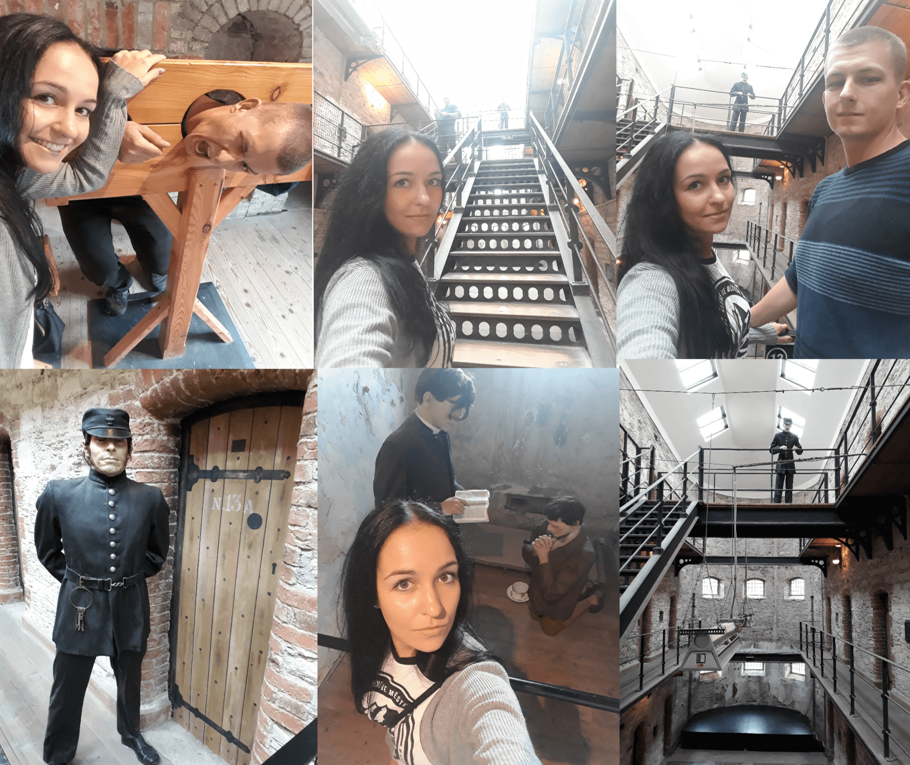
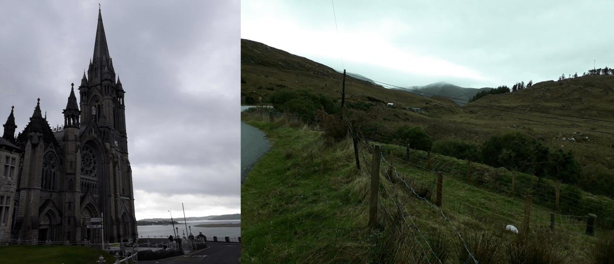

Írsko
Aj keď sa to na prvý pohľad nemusí zdať. Írsko je krásna krajina, ktorá má veľa čo ponúknuť. Veľa ľudí dokáže odradiť fakt, že tam prší približne 220 dní v roku. Čo je celkom dosť keď si uvedomíte, že rok ma 365 dní…..búúúúúm a je to vonku. Teraz to vie každý. Nemali sme toľko času koľko sme chceli mať lebo sme nestihli prvý deň lietadlo a museli sme kupovať letenky znovu, nevadilo nám to. Zážitky a pekná krajina nám neušla. Veď posúďte sami.
Tretí deň
Tretí deň sme sa hneď ráno po prebudení a po raňajkách vydali do neďalekého mesta Cork kde sme našli starú väznicu. Bolo to niečo úžasné. Keby bolo viac miest na svete kde majú zachovalé staré vezenia. Čas strávený dnu bol vážne nádherný. No veď posúďte…
{kind=link}
Po dákom čase strávenom v Cork-u sme sa vydali do mesta Cobh, ktorý bol poslednou zástavkou známeho Titanicu…. Tak veľmi to tu ľudia opisovali a hovorili o tom, že sme to proste museli vidieť ale ako to zvyčajne býva…. Bolo to trochu sklamanie. Nebolo tam nič extra na pozorovanie. Okrem kostola alebo ako by som to nazval. Dnu sme ale neboli.Zvyšok dňa bolo len cestovanie po kopcoch (autom) počas dosť upršaného počasia.
{kind=link}